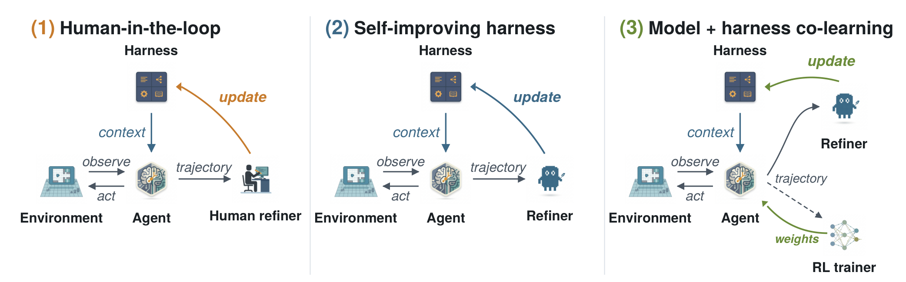
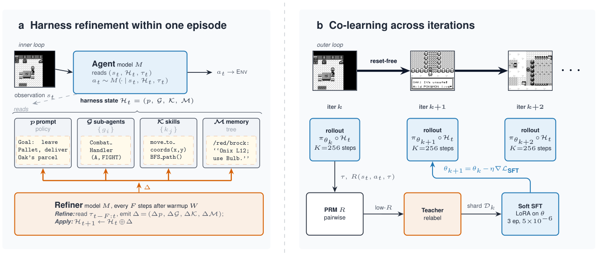
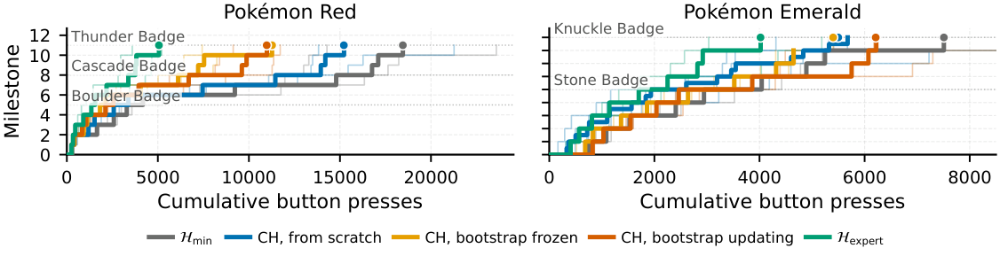
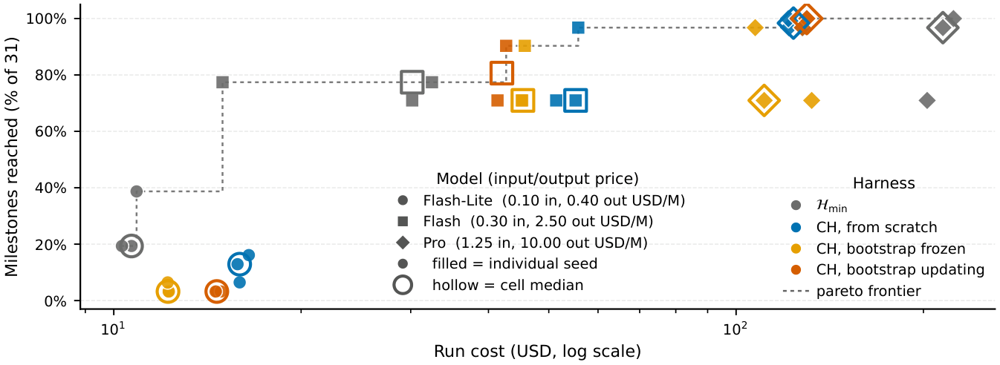
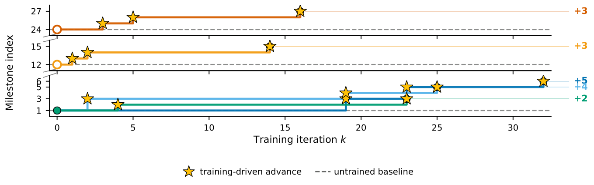
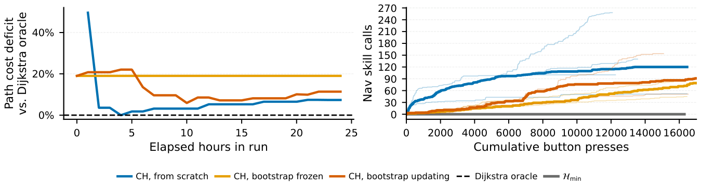

Continual Harness：为自我改进的 foundation agent 做在线 (reset-free) 适应
Continual Harness: Online Adaptation for Self-Improving Foundation Agents
①开源贡献 Open-source Artifacts
本文开源了 harness / agent 的参考实现（含 GPP benchmark harness 与三种游戏的 emulator 接入），采用 MIT 许可证；但不附带模型权重、训练代码与数据集——模型一律走外部 VLM API（Gemini / OpenAI / Anthropic 等），开源模型部分用的 Gemma-4 / Qwen3.5 也是依赖官方权重，本文不二次分发。游戏 ROM 需用户自备（合法获取）。下表链接均已实际核实。
| 类型 | 是否开源 | 内容 / 链接 |
|---|---|---|
| 代码 Code | ✔ | github.com/sethkarten/continual-harness（MIT）——Continual Harness 的 reset-free refining scaffold、PokeAgent / vision-only / sub-agent 等 agent 实现、meta-tool API、Web UI、metrics、checkpoint 持久化，及多家 VLM 后端。仓库自述同时包含 GPP benchmark harness（用于通关 Blue / Yellow Legacy / Crystal）以及 PokeAgent Speedrun Track 2 的代码。 |
| 模型权重 Weights | ✘ | 未发布。frontier 端用 Gemini 3 系列 API（Pro / Flash / Flash-Lite）；开源 student 用 Gemma-4（E2B / E4B / 26B MoE / 31B dense）的官方权重做 LoRA 微调，本文不分发自己训练出的 adapter。 |
| 数据集 Dataset | ✘ | 未单独发布。训练用的 teacher 轨迹（Gemini-3.1-pro 的 Continual Harness gameplay）未打包公开。 |
| 环境 / Benchmark | ✔（间接） | 评测沿用 PokeAgent Challenge 的 milestone 评测与专家 harness（Karten et al. 2026）。本仓库提供 Pokémon Red（PyBoy）、Emerald（mGBA）的 emulator 接入与 milestone / 按键计数基础设施；ROM 需自备。 |
| 项目主页 / Demo | ✔ | sethkarten.ai/continual-harness；GPP 当年为公开直播项目。 |
②研究动机与贡献 Motivation & Contribution
背景与问题
在 coding / assistant 领域，agentic harness（把 foundation model 包上 tools、memory、planning 的 scaffolding 层）已经是标配基础设施：Claude Code、OpenHands、OpenClaw 让模型能浏览代码库、跑命令、在长交互里维持状态。但 embodied agent 没有同等物——面对长程、部分可观测（partial-observability）的决策任务（典型如玩一整款 RPG），缺少能自动搭建 scaffolding 的方法。
问题有多硬，PokeAgent Challenge 给了一个干脆的答案：没有 domain-specific scaffolding 时，frontier 的 vision-language model 在 RPG 上几乎寸步难行。原因是：模型对像素网格的细粒度空间推理很弱，游戏里大量信息（NPC 意图、战斗机制）不可直接观测，而且任务横跨上万步——overworld 导航、NPC 对话、回合制战斗、物品管理、被 badge / 剧情 gate 卡住的目标，环环相扣。
现有的「自改进」思路也都有结构性短板。Prompt-optimization（如 GEPA、DSPy 系的 optimizer）和 reflective self-improvement（Reflexion、Self-Refine）通常只优化 system prompt 这一个组件，且要跑完整局再重置（reset）环境才更新一次。这带来两个致命问题：(1) 每次 reset 都把之前积累的失败诊断清零，改进无法在一局内复利；(2) 那些只在深度局面才暴露的失败（后期 Elite Four 战斗、多步谜题、长对话链）reset-based 方法按定义就够不到——因为每轮都从初始状态开始。而对真正长跑的 coding agent / embodied agent / ops 任务来说，免费 reset 本就稀缺甚至不存在，reset-free 才是实际占主导的场景。
本文的切入点
作者的关键观察来自 GPP 项目自身：在 Yellow Legacy 和 Crystal 最难的阶段，他们把人写的专家 agent 撤掉、改为给模型一组 meta-tools（define_agent、run_code、notepad 编辑、自建工具）之后，模型自发开始迭代自己的策略——不请自来地把一个 sandbox 漏洞封装成通用 press_sequence 原语、给最终 Boss 战起名「Operation Zombie Phoenix」并发展出命名的多阶段战斗策略、在 notepad 里为地下道开关谜题写出显式真值表。这是一种早期、涌现的 continual-harness 行为。本文的论点是：既然人类在 loop 里手动改 harness 能通关，而模型自己也能改一部分，那就把整个 refiner 角色自动化、并去掉 reset，让 harness 在一局之内持续演化。
核心贡献
- GPP 项目结果：通过 harness refinement，让 Gemini 成为首个通关多款宝可梦 RPG 的 AI 系统——Blue（2025-05）、Yellow Legacy 硬核模式（2025-08，击败 Elite Four）、Crystal（2025-11，终盘无败北）。并定量刻画了 harness 在数千小时游玩里如何被「集中、反复」地改写。
- 提出 Continual Harness：一个 reset-free 框架，从极简环境接口出发，通过对 harness state 的在线 in-context learning，自动为 embodied agent 装配出 system prompt / sub-agents / skills / memory 四件套——把 prompt-optimization 从「只改 prompt、靠 reset」推广到「改全状态、不 reset、局内 mid-episode 更新」。
- 追回专家 harness 的大半差距：在 Pokémon Red、Emerald 上跨 Gemini 3 三档模型，Continual Harness 把「极简接口 → 人工专家 harness」的效率差距追回大部分；在 Emerald 的「成本 vs 完成度」Pareto 平面上，增益随模型能力而变（Pro 上严格 Pareto 占优，Flash 上高方差，Flash-Lite 在能力地板以下）。
- 在线 co-learning pipeline：把 refined harness 迁移到开源模型，用 process reward model 打分 + frontier teacher 重标注低分窗口 + soft SFT 更新，不重置环境地让 Gemma-4 在 Pokémon Red 上持续推进里程碑，从而实现 continual model-harness co-learning（模型权重与 harness 状态共同演化）。
③方法 Method
整篇方法的统一视角是 Figure 1 的「三连图」：环境 (environment)、agent、harness、refiner 这四个节点的拓扑始终不变，变的只是 refiner 的身份。(1) Human-in-the-loop：GPP 里由人读直播轨迹、重写 harness；(2) Self-improving harness：Continual Harness 把人换成一个自动 Refiner，在一局连续 episode 内对轨迹数据做改写；(3) Model + harness co-learning：在 warm-up 之后，开源模型的权重和 harness 状态在在线游玩中联合更新。

问题设定：极简接口与 harness 四件套
每个时刻 $t$，agent 收到一帧画面观测 $o_t$（当前画面的渲染图）和一张 ASCII text map $m_t$（用 .=可走、#=墙、?=可交互、N=NPC 等字符描述可见 tile 与玩家朝向），从固定按键集合 $\mathcal{A}$（八键：上下左右 / A / B / START / SELECT）里选动作 $a_t$。记 $s_t=(o_t,m_t)$。这张 text map 只是补偿 VLM 弱空间推理，它不含攻略、不含目标清单、不含寻路——人类玩家本来也能从屏幕读出这些 tile 信息。环境部分可观测，因为 NPC 意图、战斗机制等内部状态无法直接看到。
沿用 PokeAgent 的分解，一个 agentic harness $\mathcal{H}$ 由四个组件构成：
- System prompt $p$：每步推理给模型的指令与策略指导。
- Sub-agents $\mathcal{G}$：可被 orchestrator 调用的专用模块（战斗策略、解谜、自省等）。
- Skills $\mathcal{K}$：可复用例程，既含文本层启发式，也含可执行程序（pathfinder、工具封装）；自带原语如
press_buttons、get_game_state也算 skill，新 skill 可在游玩中现写。 - Memory $\mathcal{M}$：跨轨迹累积事实、策略、观察的持久知识库。
此外 harness 暴露一组固定的 meta-tools（define_agent、run_code、process_memory 等），agent 和 Refiner 都通过同一套 meta-tool API 原地编辑 $p,\mathcal{G},\mathcal{K},\mathcal{M}$——二者只在「何时被调用、看哪段轨迹」上不同。三种基准 harness：$\mathcal{H}_{\min}$ 只给环境接口 + 通用 prompt，无 sub-agent / memory / skill；$\mathcal{H}_\mathrm{expert}$ 是人工搭好的专家 harness（含 A* 寻路、type chart、伤害计算器、整理好的目标）；$\mathcal{H}_\mathrm{CH}$ 从 $\mathcal{H}_{\min}$ 起步、由自动 Refiner 不断改写，随每个 refinement cycle 演化。

第一层 loop：一局之内的 harness refinement
方法的核心是对 harness state $\mathcal{H}$ 做在线 in-context learning，由两层 loop 嵌套：
- 内层 loop（agent step）：被当前 harness $\mathcal{H}_t$ 包裹的模型 $M$，从 $s_t$ 和到目前为止的轨迹产出动作 $a_t$。这是标准的 agent 一步。
- 外层 loop（harness refinement）：在 warm-up $W$ 步之后，每隔 $F$ 步，一个 Refiner 读最近的轨迹窗口、找失败签名（failure signatures），发出按组件分的编辑 $\Delta=(\Delta p,\Delta\mathcal{G},\Delta\mathcal{K},\Delta\mathcal{M})$。agent 不 reset，更新后的 harness 直接进入下一步的 context：$$\mathcal{H}_{t+1}=\mathcal{H}_t\oplus\Delta,$$ 其中 $p$ 被 $\Delta p$ 替换，$\mathcal{G},\mathcal{K},\mathcal{M}$ 接受 CRUD（create / read / update / delete）式操作。
Refiner 读窗口 $\tau_{t-F:t}$，识别四类失败签名——导航打转、工具调用失败、目标停滞、错过的探索机会——然后跑四趟（每组件一趟）：(i) 基于已识别失败重写 prompt $p$；(ii) 为反复出现的多步模式新建 sub-agent，改写已有项以修失败，删掉没产出地被调用过的项；(iii) 把成功序列固化成 skill，并修复抛过异常的可执行代码；(iv) 补 memory 填空白、更新陈旧项、给已经走过的区域降权。
第二层 loop：model–harness co-learning（训练开源模型）
Figure 2(b) 把同一框架实例化成训练 loop。每个在线迭代让策略 $\pi_{\theta_k}$ 在一个持续被 Refiner 改写的 harness $\mathcal{H}_t$ 内跑 $K{=}256$ 步（DAgger 式 rollout，memory / skills / sub-agents / prompt 全在演化）。一个 pairwise process reward model (PRM) $R(s_t,a_t,\tau)\in[0,1]$ 在最近 transition 的滑动窗口上给每步打分；低奖励窗口由 frontier teacher（Gemini-3.1-pro）重标注，对重标注后的 shard 做一次 soft SFT 得到 $\theta_{k+1}$。该 loop 同样 reset-free：第 $k$ 轮结束时保存的 emulator state 直接作为第 $k{+}1$ 轮的起点，模型在游戏里的位置跨训练累积、而非每轮重启。
这里的精妙之处是轨迹分布 $\mathcal{D}_\theta$ 通过 harness 依赖于 $\theta$：模型动作诱导出 $\tau$ → Refiner 读 $\tau$ 更新 $\mathcal{H}_t$ → $\mathcal{H}_t$ 又塑造下一步的观测分布。于是 $\theta$ 跨迭代更新（在重标注轨迹上 SFT）、$\mathcal{H}_t$ 迭代内更新（靠 Refiner），二者在同一份轨迹数据上联动，构成 continual co-learning。
- 接口：原生分辨率（Red/Crystal 160×144，Emerald 240×160）上采样 2×；每个观测步推进固定 120 帧，让菜单 / 战斗文本 / 行走动画在两次决策间结算完。
- 成本指标：主指标是累计按键数（button presses）到里程碑，不是工具调用次数——一次
press_buttons([A,A,DOWN])记 3 次。这让 $\mathcal{H}_{\min}$（每步一键）与会把多步压进一次 tool call 的 harness 可直接比较，并奖励动作通道上的压缩。 - SFT warm-up：Gemma-4（E2B/E4B/26B MoE/31B dense）用 Unsloth 在 H200 上做 LoRA（$r{=}256,\alpha{=}256$，bf16，8K context），lr $2\!\times\!10^{-5}$，对 teacher 轨迹过一遍。
- Offline GRPO：每个状态采 $G{=}4$ 个 completion，由 Gemini-3-flash-preview 按 action correctness（权重 0.6）+ format（0.4）打分，组内归一化优势，lr $1\!\times\!10^{-6}$，KL $\beta{=}0.04$，共 590 步。
- 在线 PRM 奖励= 轨迹进展(0.4) + action correctness(0.3) + reasoning quality(0.2) + format(0.1)；relabel 后 soft SFT（3 epoch，lr $5\!\times\!10^{-6}$），PRM stride 8。
④实验评估 Evaluation
评测设置
- Benchmark / 环境：Pokémon Red 与 Emerald（同类型、但地图 / 机制 / 难度不同）；GPP 部分还覆盖 Blue、Yellow Legacy、Crystal。用 PokeAgent Challenge 的标准化 milestone 评测——Emerald 到第 3 道馆共 31 个里程碑，Red 18 个。
- 对比基线：$\mathcal{H}_{\min}$（极简接口 + 通用 prompt）作下界；$\mathcal{H}_\mathrm{expert}$（人工专家 harness，含 A* 寻路 / type chart / 伤害计算 / 整理好的目标）作上界。$\mathcal{H}_\mathrm{CH}$ 三个变体：from scratch（从 $\mathcal{H}_{\min}$ 起、全程 refine）、bootstrap frozen（载入一次成功 from-scratch 的 harness、关闭 refine）、bootstrap updating（同样 bootstrap、但继续 refine）。
- 模型与种子：frontier 用 Gemini 3 三档（Pro / Flash / Flash-Lite）；开源迁移用 Gemma-4（E2B / E4B / 26B MoE / 31B dense），跨族负对照用 Qwen3.5（27B/35B）。每个实验至少 3 个 seed，报 seed 中位数 + 半透明单 seed 轨迹。
- 指标方向：主指标累计按键数到里程碑（越低越好）；Pareto 平面用「到达里程碑比例（越高越好）」对「美元成本（越低越好，log 轴，cached input 按 25% 计）」。
主要结果 1：GPP 通关多款 RPG，且 harness 改写「集中而反复」
GPP 让 Gemini 通关 Blue / Yellow Legacy 硬核 / Crystal（终盘无败北），成为首个通关多款宝可梦 RPG 的 AI。定量上：Yellow Legacy 全程对 skill / sub-agent 定义的 CRUD 操作贯穿始终、不收敛到固定 scaffold，且集中在少数导航 / 战斗组件；其中 battle_strategist_agent 这个 prompt 在 Elite Four 阶段经历「生长—简化」循环，最后被一次结构性重写吸收进会派发到命名子检查的 master_battle_agent。Elite Four 的 lifetime 重试次数也很能说明长程难度：Lorelei 18 次、Bruno 20 次、Agatha 18 次、Lance 19 次、Champion Pixel 第 4 次才胜——伴随的是越来越结构化的战斗 prompt 与持久书面 memory。
主要结果 2：Continual Harness 追回到专家 harness 的大半差距

在两款游戏上，Continual Harness 相对 $\mathcal{H}_{\min}$ 显著降低每个里程碑的按键成本，并把 $\mathcal{H}_{\min}\!\to\!\mathcal{H}_\mathrm{expert}$ 的效率差距追回大半——而且它看不到游戏 decompilation、里程碑日程、或专家 harness 里任何人工 sub-agent。残差差距集中在对话密集的馆内和多回合战斗策略（Continual Harness 尚不能可靠合成的组件）。在 Red 上，bootstrap-updating 在每个里程碑都比 from-scratch 更高效，说明 refinement 信号在一局内复利、且一局炼好的 harness 能加速下一局——即便游戏状态本身被 reset。
主要结果 3：增益依赖模型能力（Emerald Pareto）

| 模型 × harness | 到达里程碑 | 成本（中位） | 读法 |
|---|---|---|---|
| Pro · $\mathcal{H}_{\min}$ | 98% | $215 | 基线 |
| Pro · CH from-scratch | 100% | $130 | 严格 Pareto 占优：满完成 + 约 −40% 成本 |
| Pro · CH bootstrap(×2) | 96–100% | $110–140 | 同档高效区 |
| Flash · $\mathcal{H}_{\min}$ | 77% | $30 | 基线 |
| Flash · CH bootstrap-upd. | 80% | $42 | 仅略高，整体高方差 |
| Flash-Lite · $\mathcal{H}_{\min}$ | 20% | $11 | 基线 |
| Flash-Lite · CH（任一变体） | 3–13% | 同等或更高 | 在能力地板之下，反而更差 |
结论很干脆：harness 增益需要一个「足够会正确使用 harness 组件」的模型。Pro 上 Continual Harness 严格 Pareto 占优；Flash 上收益高方差；Flash-Lite 则被 harness 拖累——存在一个能力地板（capability floor），其下 refinement loop 无法 bootstrap。
主要结果 4：开源 student 与 refining harness 协同学习

开源模型先经 SFT（在 frontier Continual Harness 轨迹上）+ offline GRPO 两段 warm-up，但两段 warm-up 单独都不带来有意义的里程碑推进；真正的 live 增益只在 co-learning 阶段出现。每个迭代 = 256 步 DAgger rollout（穿过全套 refining harness）→ PRM 打分 → Gemini-3.1-pro 重标注低分窗口 → soft SFT。loop reset-free，所以图里每条曲线是同一个 agent 在自己训练里走出的一条连续游戏轨迹，不是多次独立 rollout 的聚合。结果：无论从游戏开头还是中盘 checkpoint，模型的实时游戏位置都在跨迭代推进，两类阶梯形状一致，说明训练信号不挑早期分布。跨族负对照 Qwen3.5（无 SFT warm-up）能产出可解析的 tool call，但在 live rollout 里走不出起始区，排除了「rollout 协议假象」。warm-up 阶段的 eval（Red）也显示 SFT 把 tool_format 从近 0 抬到 0.50、action_relevance 抬到 0.75，是后续能上 loop 的前提。
消融 / 机制归因

- Skill 是主力：用 Dijkstra/BFS oracle 直接度量 skill 自身质量（独立于端到端效率）。$\mathcal{H}_{\min}$ 从不调用导航 skill；每个 CH 条件在 24 小时里累计上百次调用。from-scratch 的路径成本缺口从开局近「半成本惩罚」迅速降到个位数并稳住——这是 in-loop、reset-free 的修复：早期调用的失败被 Refiner 诊断，受影响的 skill 在同一局内被修好。附录指出 $\mathcal{H}_{\min}\!\to\!\mathcal{H}_\mathrm{CH}$ 的差距大部分由 skill library 单独吸收。
- Skill 调试是「分诊」：大多数现写的 skill 从没被调用（create-and-forget 长尾），少数工作集吃掉绝大多数调用；refinement loop 专修 agent 真正依赖的 skill、容忍无用 skill 的回归。这正是 reset-free 优于 reset-based 的论据——失败记录与修复落在同一条轨迹里，loop 在一局内闭合。
- Sub-agent 省 token：sub-agent 的 per-step token 比 orchestrator 低约一个数量级；导航 / 对话 / 菜单任务的「干净返回 + 回到原目标」成功率都接近上限。结论：是 harness 而非裸模型扛起了大部分长程性能——一旦 orchestrator 能委派给便宜的专用 context 并信任其返回，长任务就用远少的 token 变得可解。
- Memory 复用 + bootstrap 边界：memory 只有在 library 既成熟又被继承时才被真正「拉取」——bootstrap 跑会在馆 / 洞窟段主动查继承来的 memory，from-scratch 则写得多、回看少（引用率绝对值偏低，作者如实报告）。继承表（c5）显示：Emerald 上 frozen / continued 各 store 的继承率几乎 100%；Red 上 skills / memories 也 ~100%，唯独 sub-agents 在 continued 跌到 6.4%——Red 的 bootstrap-updating agent 把 sub-agent 预算缩到寥寥几次、且引用了 bootstrap 里不存在的 ID，随之里程碑阶梯回退（约第 213 步起）。结论：可迁移单元是「跨局的 harness」而非单局，当 agent 继续用继承组件时成立，抛弃时即破——提示需要 reuse prior 或 sub-agent 弃用策略。
⑤洞见 Insights
局限与未来
- 能力地板：Flash-Lite 在 Emerald 卡在 20% 以下，且所有 CH 变体都不如 $\mathcal{H}_{\min}$；当前评测的开源 Gemma-4（至 31B）还不足以同时当 teacher 和 trainee，co-learning 因此耦合了一个 frontier teacher。
- co-learning 未饱和：只报告了训练 horizon 内的持续推进，未确立收敛点；per-iteration PRM 奖励非单调、推进呈「爆发式」（多个 ≥0.40 的连续窗口才换来一次大跨步），resume checkpoint 后还有 2–3 迭代的回归。
- 残差差距：对话密集的馆内、多回合战斗策略仍是 CH 难以可靠合成的部分；sub-agent 缺乏 reuse prior / 弃用规则会导致回退。
- 未做的对照：本文只研究 reset-free 训练，与「传统带 reset 的 batch 累积」在同一任务上的正面对比仍是 open question。
与相关工作的关系
（基于本文自身论述）与 coding harness（Claude Code / OpenHands / OpenClaw）相比，本文把 harness 思想搬到 embodied RPG，并自动化其构建。与 prompt-optimization（GEPA、DSPy 系）和 reflective self-improvement（Reflexion、Self-Refine）相比，关键区别是 Continual Harness 原地编辑全部 harness 状态 $(p,\mathcal{G},\mathcal{K},\mathcal{M})$、且 mid-episode、从部分轨迹窗口、不 reset，而它们多是「episode 之间、只改局部、要 reset」。与游戏 agent 两条路线相比——Voyager / Claude Plays 自建工具、或把 LLM 配一个手工 planner——本文把「自建」推进到全自动 refiner，并由 GPP 的真实通关记录背书。在 RL 侧，它把 reset-free RL、in-context RL、process reward model、STaR 式自训练组合进 co-learning：warm-up 用 SFT + offline GRPO，在线阶段让 frontier teacher 重标注模型自身 rollout 的低分窗口、做 soft SFT，从而把 harness refinement 与模型训练闭成一个环。